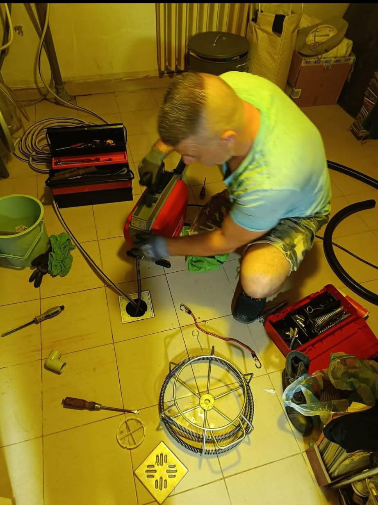
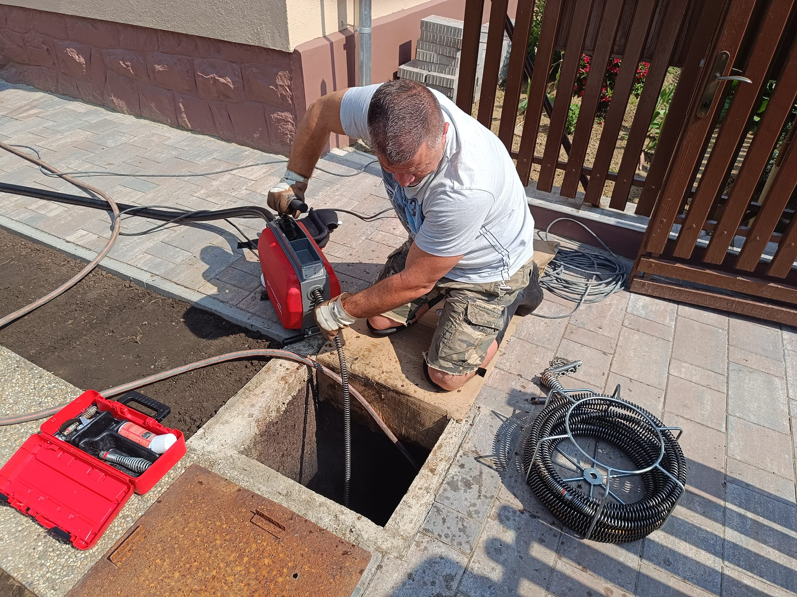
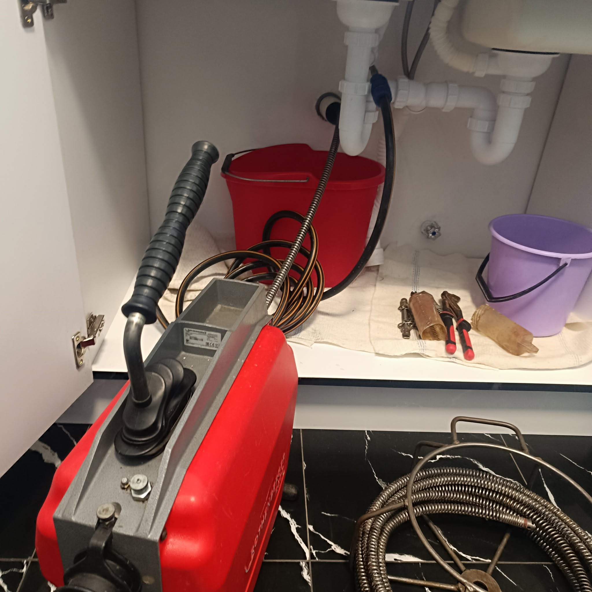
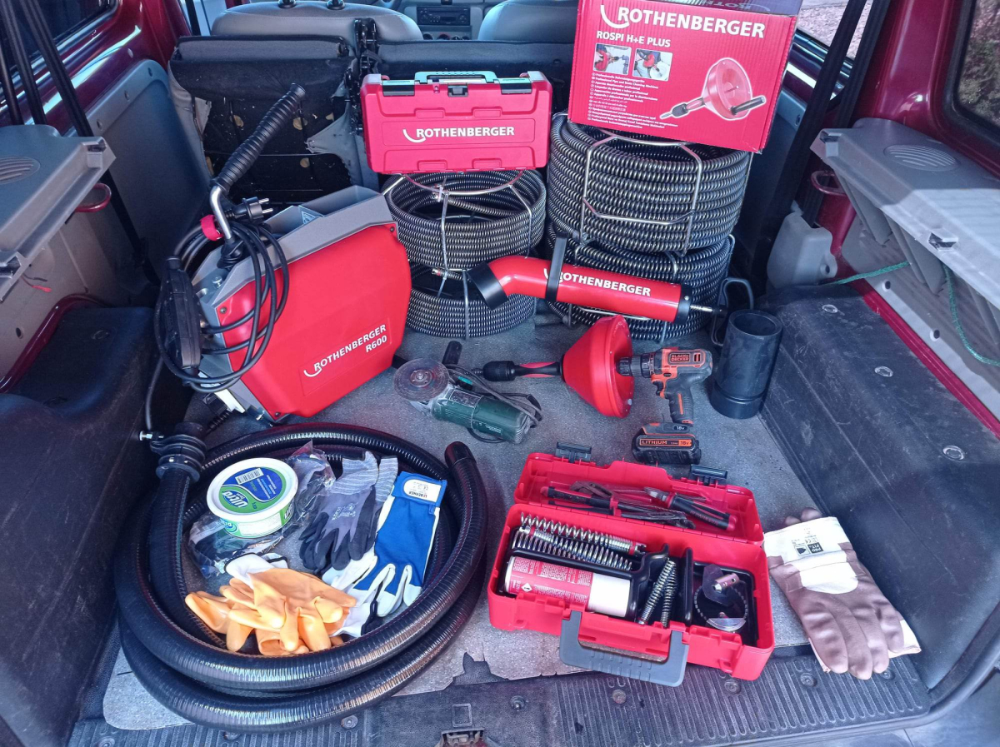
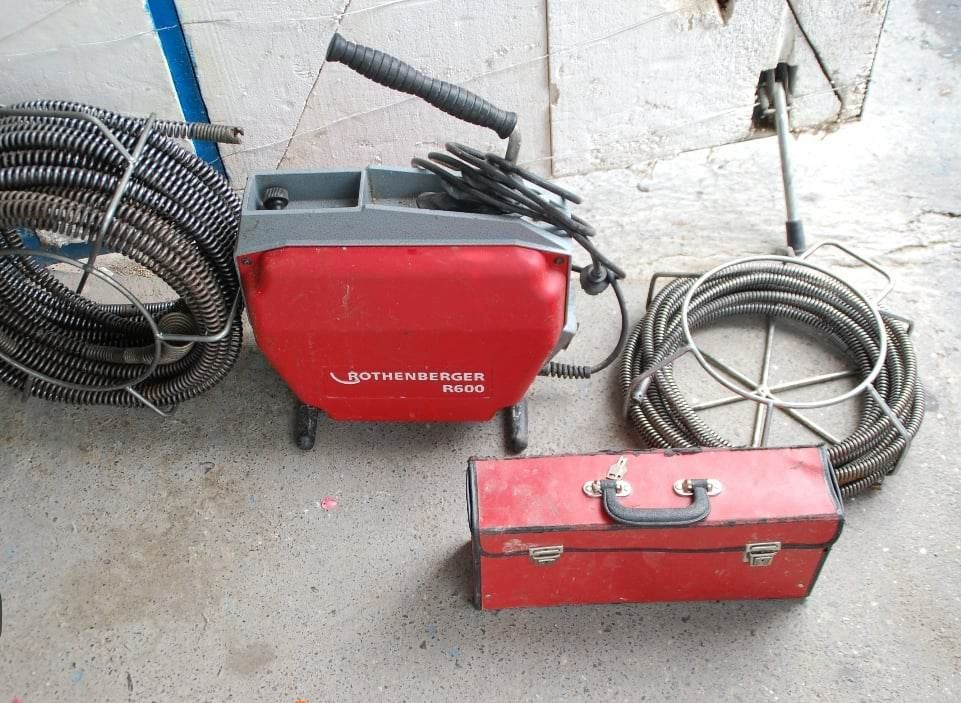

WC- és mosdódugulás
Eldugult vécé, mosdó vagy csöpögő lefolyó – gyorsan, tisztán, a burkolat megbontása nélkül.
Bozó Attila – duguláselhárító, Eger
Nem kell órákig várnia és nézni, ahogy áll a víz. Telefonál, megmondom az árat, és Egerben sokszor már 1-2 órán belül ott vagyok. A legtöbb esetben bontás nélkül oldom meg a problémát, és addig maradok, amíg újra rendesen le nem folyik.
Lakásban, családi házban, üzletben vagy étteremben – a háztartási lefolyótól a társasházi gerincvezetékig gyorsan helyreállítom a vízelvezetést. Ha a baj forrása mélyebben van, csőkamerával is megnézzük.
Eldugult vécé, mosdó vagy csöpögő lefolyó – gyorsan, tisztán, a burkolat megbontása nélkül.
A konyhai vezetéket az évek alatt lerakódott zsír szűkíti be. Magasnyomással a csőfalról is lemosom.
Visszaáramló szennyvíz vagy több lakást érintő dugulás esetén a fő gerincvezetéket is átjárhatóvá teszem.
Fürdőszobai és pincei összefolyók, udvari aknák tisztítása, feliszapolódott vezetékek átmosása.
Eldugult ereszcsatorna, feltöltődött udvari szennyvízvezeték – a kültéri elvezetést is rendbe teszem.
A dugulás mögött sokszor csőhiba áll. A feltárt hibát meg is tudom javítani, hogy ne térjen vissza.
Nincs bonyodalom és nincs várakozás napokig. Négy egyszerű lépés, és megoldódik a gond.
Elmondja, mi a gond és hol. Rögtön megbeszéljük az árat és hogy mikor tudok menni.
Egerben és a környező településeken sokszor már 1-2 órán belül ott vagyok a megfelelő gépekkel.
Bontás nélkül, gépi spirállal vagy magasnyomású mosással helyreállítom a vízelvezetést.
Kipróbálom, hogy tényleg akadálytalanul folyik-e, és csak akkor megyek el.
A duguláselhárítás bizalmi szakma. Nálam azt kapja, amiben megállapodtunk: tiszta munkát, korrekt árat és emberi hozzáállást. A hívás után elmondom, mire számíthat, és nincsenek utólag beugró tételek.

Amikor felhív, velem beszél, és én is érkezem a helyszínre – ugyanaz a személy, akivel az árat és az időpontot egyeztette. Így nincs félreértés, és pontosan azt kapja, amiben megállapodtunk.
Évek tapasztalatával, profi géppel dolgozom, és addig maradok, amíg a víz újra rendesen le nem folyik.
Hívjon mostNéhány kép a helyszíni munkákról. A valós fotók a legjobb bizonyíték arra, hogy szakszerű, tiszta munkát kap.

Helyszíni munkaUdvari akna tisztítása gépi spirállal
Konyhai lefolyóGépi spirálozás közben
Profi felszerelésMindig a megfelelő eszközzel érkezem
Karbantartott gépekMegbízható technika minden munkához0 óta a szakmában
Eger 0 km-es körzetében
Hétvégén is elérhető vagyok
A bizalom nálam a legfontosabb. Nézze meg valós ügyfeleim értékeléseit a Google-ön.
Heves megye egész Eger környéki térségében elérhető vagyok, Füzesabonytól Pétervásáráig. Ha az Ön települése nincs a listán, hívjon, és megmondom, ki tudok-e menni.
Egerben és a közvetlen környéken jellemzően 1-2 órán belül kiérek. Sürgős esetben – teljes lefolyódugulásnál vagy visszaáramló szennyvíznél – a leghamarabb megyek, akár hétvégén is.
A pontos árat telefonon megbeszéljük, miután elmondja, mi a gond. Minden munka más, ezért előre a várható árat mondom meg, amivel tud kalkulálni. Eger 40 km-es körzetében kiszállási díjat nem számítok fel.
Az esetek túlnyomó részében nem. Gépi spirállal és magasnyomású mosóval a burkolat és a cső megbontása nélkül szüntetem meg a dugulást. Bontásra csak valódi csőhibánál, előzetes egyeztetés után kerül sor.
Igen, hétvégén és ünnepnapokon is elérhető vagyok. A munkaidőn kívüli kiszállásnál ügyeleti felár érvényes, amiről a hívás során előre tájékoztatom.
Ne öntsön a lefolyóba maró hatású vegyszert, mert az a csőnek és a szerelőnek is árthat, a dugulást pedig ritkán oldja meg. Zárja el a vizet az érintett helyen, és amit lehet, tegyen félre a munkaterületről.
A szabályosan kiépített, működő csatornahálózaton elvégzett munkára garanciát vállalok. Ha a dugulás mögött csőhiba, letörés vagy rossz lejtés áll, azt csőkamerával megmutatom, és javaslatot adok a végleges megoldásra.
Egy hívás, és elindulunk. Egerben és a környező településeken, hétvégén is.